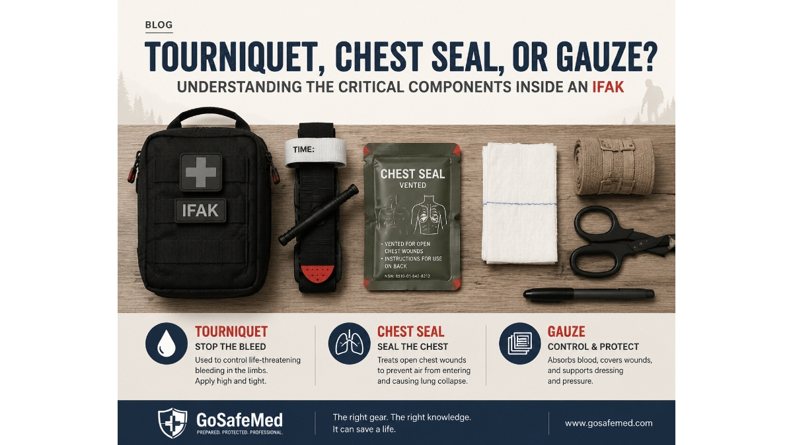

Tourniquet, Chest Seal, or Gauze? Understanding the Critical Components Inside an IFAK
JUL 21, 2026

Why Professional Buyers Should Evaluate Trauma Kits Beyond Item Count
When purchasing an IFAK (Individual First Aid Kit), many buyers start with a simple comparison:
“How many items are included?”
A kit with 20 items may appear better than a kit with 10 items.
However, experienced distributors and safety product buyers know that trauma response is not determined by quantity.
This is also why buyers may receive very different quotations for products described as the same “IFAK Mini” by different suppliers.
The reason is simple: the name “IFAK Mini” does not always represent the same level of trauma capability.
Two products may share the same product name, similar pouch design, and similar appearance, while the actual trauma response capability inside can be significantly different.
The more important question is:
Does the configuration include the right components for the emergency situations your customers may face?
A professional IFAK is not simply a small bag filled with medical supplies.
It is a carefully selected combination of trauma response components designed around specific risks.
For outdoor brands, tactical distributors, PPE suppliers, and industrial safety companies, understanding the function behind each component helps avoid choosing products that look complete but may not match the intended application.
The First Priority: Massive Bleeding Control
In many emergency situations, severe bleeding is one of the most time-critical risks.
This is why bleeding control components are often considered the foundation of a trauma IFAK.
Tourniquet: A Key Component for Life-Threatening Limb Bleeding
A tourniquet is not included in a trauma kit simply because it is a popular tactical item.
Its purpose is specific:
To provide rapid control of severe extremity bleeding when direct pressure alone may not be enough.
For outdoor environments, industrial workplaces, or remote operations, injuries can happen in locations where professional medical assistance is delayed.
Examples include:
- machinery-related injuries
- falls during outdoor activities
- sharp tool accidents
- remote expedition incidents
For distributors evaluating IFAK suppliers, the presence, quality, and intended application of a tourniquet can significantly change the capability of the kit.
A pouch without appropriate bleeding control components may look like an IFAK, but it serves a very different purpose.
Compressed Gauze and Emergency Bandages: Supporting Bleeding Management
Tourniquets are only one part of bleeding control.
Other components, such as:
- compressed gauze
- emergency bandages
- trauma dressings
support different wound management situations.
For example, compressed gauze is designed for applications where wound packing and pressure application may be required.
Emergency bandages combine dressing and pressure functions, helping users manage bleeding injuries with fewer separate components.
For procurement teams, the important consideration is not whether a kit contains “more gauze”.
It is whether the components work together as a practical bleeding control system.
Chest Seal: Preparing for Serious Chest Injuries
Not every IFAK requires the same level of respiratory injury management.
However, for professional users operating in higher-risk environments, chest seals can become an important consideration.
Chest injuries may occur in situations such as:
- industrial accidents
- vehicle-related trauma
- outdoor incidents involving falls or sharp objects
A chest seal is designed for managing open chest wounds during emergency response before advanced medical care becomes available.
For expedition companies, tactical users, and remote operation teams, this type of component reflects a different level of preparedness.
This is why professional buyers should always consider:
Who will use the kit, and in what environment?
Airway Components: When the Environment Changes the Requirement
Some trauma IFAKs include airway-related components such as nasal airways.
These components are generally not required for every user.
However, for professional applications where:
- evacuation time may be longer
- trained personnel may be involved
- emergency response capability is expected
airway management becomes part of a broader trauma response strategy.
This is an example of why IFAK configuration should be based on application, not simply a standard checklist.
Why the Same IFAK Configuration Does Not Fit Every Market
A common challenge for distributors is finding a product that fits their customer base.
An outdoor retailer may need:
✓ compact size
✓ essential trauma capability
✓ easy product positioning
An expedition supplier may require:
✓ stronger trauma response capability
✓ remote environment considerations
An industrial safety distributor may focus on:
✓ workplace injury scenarios
✓ broader emergency response requirements
The correct configuration depends on:
✓ user profile
✓ operational environment
✓ response expectations
✓ local market requirements
What Should Buyers Ask an IFAK Supplier?
Before selecting an IFAK manufacturer or trauma kit supplier, procurement teams should consider:
1. What emergency scenarios is this kit designed for?
A product designed for recreational outdoor users may not be suitable for industrial or tactical applications.
2. Are critical trauma components included?
Look beyond the number of items.
Understand the function of the components.
3. Does the supplier understand your market?
A good supplier should help you select a configuration that fits your customers, not simply provide the lowest quotation.
How GoSafeMed Approaches Trauma Kit Development
At GoSafeMed, we focus on application-based IFAK configurations rather than simply assembling medical supplies into a pouch.
Our trauma kits are developed around different market requirements, including:
- outdoor safety applications
- professional expedition use
- tactical response scenarios
- industrial safety environments
We believe the value of an IFAK is not measured by how many items are inside.
It is measured by whether the configuration supports the emergency situations it was designed for.
Final Thoughts
For distributors and brands, choosing an IFAK supplier is not only a sourcing decision.
It is a decision about product positioning, customer expectations, and emergency preparedness.
Before comparing prices, compare purpose.
Before comparing item counts, understand the role of each critical component.
Because inside every professional trauma kit, every component has a reason.